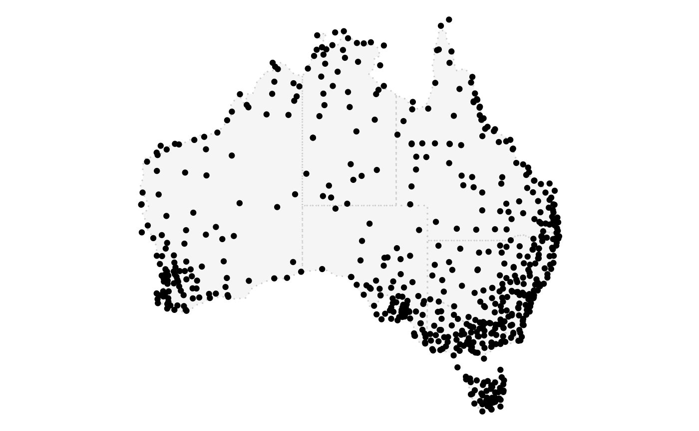
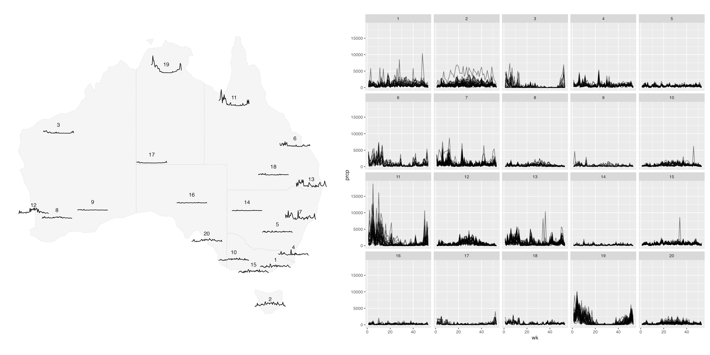
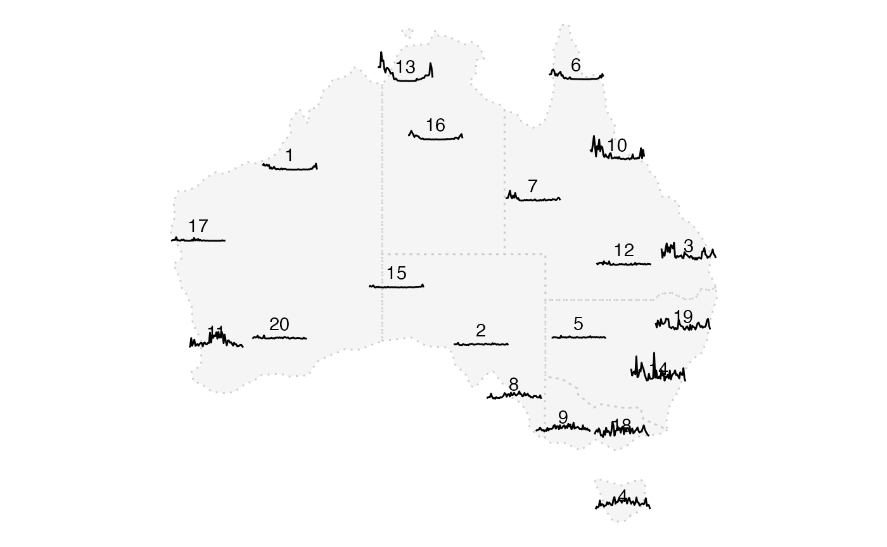

4-spatial-temporal-aggregation.RmdThis vignette shows an example of spatial and temporal aggregation on the Victoria weather station data.
In the package weatherdata includes all the active (in 2020) Australian stations that record precipitation, maximum and minimum temperature.
aus_stations <- weatherdata::climate_full %>%
mutate(ll = s2_lnglat(long, lat)) %>%
stretch(ts) %>%
mutate(wk = lubridate::week(date)) %>%
group_by(wk) %>%
summarise(prcp = sum(prcp, na.rm = TRUE),
tmax = mean(tmax, na.rm = TRUE),
tmin = mean(tmin, na.rm = TRUE)) %>%
tamp()
state_map <- rmapshaper::ms_simplify(ozmaps::abs_ste, keep = 2e-3)
plot_map(state_map) +
geom_point(data = aus_stations, aes(x = long, y = lat))
With package s2, we can compute the distance matrix between stations. We use k-means for a basic clustering to aggregate the stations in the spatial dimension based on the distance matrix. After several trials, 20 clusters work well for all the stations in Australia.
dist_raw <- scale(s2_distance_matrix(aus_stations$ll, aus_stations$ll))
k <- kmeans(dist_raw, centers = 20)
station_clustered <- aus_stations %>%
strip_rowwise() %>%
mutate(cluster= k$cluster)
# left_join(tibble(id = aus_stations$id,
# cluster = k$cluster))
# left_join should update leavesAfter this, there are several functionalities and plots that we hope to make:
spatial_cluster <- station_clustered %>%
switch_key(cluster) %>%
mutate(chull = list(chull(val$long, val$lat)),
ll_cluster = s2_make_polygon(c(val$long[chull]),
c(val$lat[chull]), oriented = FALSE),
centroid = s2_centroid(ll_cluster),
long = s2_x(centroid),
lat = s2_y(centroid))
spatial_cluster %>% head(5)
#> # Cubble: cluster-wise: nested form
#> # Key: cluster [5]
#> # Leaves: id [chr], wk [dbl], prcp [dbl], tmax [dbl], tmin [dbl]
#> cluster val ts chull ll_cluster centroid long lat
#> <int> <list> <list> <list> <s2_geography> <s2_geog> <dbl> <dbl>
#> 1 1 <tibble [46 × 7]> <tibbl… <int … <POLYGON ((150… <POINT (… 149. -36.4
#> 2 2 <tibble [67 × 7]> <tibbl… <int … <POLYGON ((119… <POINT (… 118. -31.2
#> 3 3 <tibble [15 × 7]> <tibbl… <int … <POLYGON ((146… <POINT (… 143. -25.8
#> 4 4 <tibble [48 × 7]> <tibbl… <int … <POLYGON ((146… <POINT (… 145. -37.3
#> 5 5 <tibble [37 × 7]> <tibbl… <int … <POLYGON ((135… <POINT (… 131. -14.8
temporal_ind <- spatial_cluster %>%
stretch(ts)
temporal_ind %>% head(5)
#> # Cubble: time-wise: long form
#> # Key: cluster [1]
#> # Leaves: cluster [int], ll_cluster [s2_geography], centroid [s2_geography],
#> # long [dbl], lat [dbl]
#> cluster id wk prcp tmax tmin
#> <int> <chr> <dbl> <dbl> <dbl> <dbl>
#> 1 1 ASN00069017 1 1260 231. 182.
#> 2 1 ASN00069017 2 614 241. 192.
#> 3 1 ASN00069017 3 530 248. 189.
#> 4 1 ASN00069017 4 558 253. 199.
#> 5 1 ASN00069017 5 782 240. 187.
temporal_cluster <- spatial_cluster %>%
stretch(ts) %>%
group_by(wk) %>%
summarise(prcp = sum(prcp, na.rm = TRUE),
tmax = mean(tmax, na.rm = TRUE),
tmin = mean(tmin, na.rm = TRUE)) %>%
migrate(long, lat)
temporal_cluster %>% head(5)
#> # Cubble: time-wise: long form
#> # Key: cluster [1]
#> # Leaves: cluster [int], ll_cluster [s2_geography], centroid [s2_geography],
#> # long [dbl], lat [dbl]
#> cluster wk prcp tmax tmin long lat
#> <int> <dbl> <dbl> <dbl> <dbl> <dbl> <dbl>
#> 1 1 1 33195 262. 141. 149. -36.4
#> 2 1 2 39825 274. 148. 149. -36.4
#> 3 1 3 36793 278. 141. 149. -36.4
#> 4 1 4 29316 281. 161. 149. -36.4
#> 5 1 5 45870 267. 142. 149. -36.4
gly <- GGally::glyphs(temporal_cluster, x_major = "long", x_minor = "wk",
y_major = "lat", y_minor = "prcp", height = 2, width = 4)
state_map <- rmapshaper::ms_simplify(ozmaps::abs_ste, keep = 2e-3)
p1 <- plot_map(state_map) +
geom_text(data = temporal_cluster %>% tamp(), aes(x = long, y = lat, label = cluster)) +
geom_path(data = gly, aes(x = gx, y = gy, group = gid))
p2 <- temporal_ind %>%
ggplot(aes(x = wk, y = prcp, group = id)) +
geom_line(alpha = .5) +
facet_wrap(vars(cluster))
p1 | p2
tas_latlong <- temporal_ind %>%
migrate(lat, long) %>%
filter(lat < -40) %>%
filter(prcp == max(prcp))
state_map <- rmapshaper::ms_simplify(ozmaps::abs_ste, keep = 2e-3)
p3 <- plot_map(state_map) +
geom_point(data = station_clustered, aes(x = long, y = lat), size = 0.5) +
geom_sf(data = spatial_cluster %>% mutate(ll_cluster = sf::st_as_sfc(ll_cluster)),
aes(geometry = ll_cluster), fill = "transparent") +
geom_point(data = tas_latlong, aes(x = long, y =lat), col = "red")
p3 